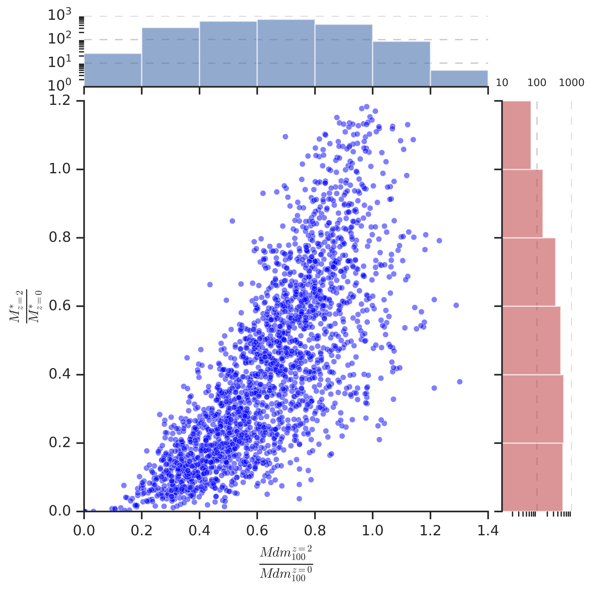
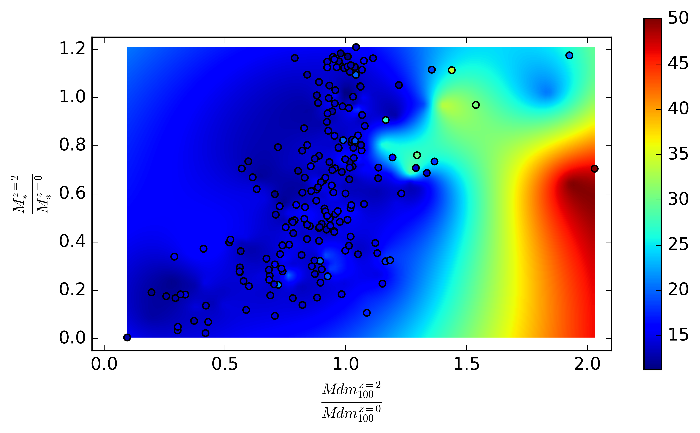

But looking for these relics are extremely hard due to observational limitations and also since they are theoretically predicted to be rare. With the latest development of cosmological simulations, there is an opportunity to look for these relics. Since we only have discovered very few relics through telescopes, there are a lot of uncharted territories for defining and feature engineering classifiers to identify relics .
So we explore and analyze data from multiple Illustris simulations to look for new features common to relics and how they are different from other galaxies. Especially how does dark matter profiles and properties are related to these relics. Do relic galaxies have high concentration dark matter halos around them? etc.
Tools/Packages
Programming
Python : Pandas, Numpy, Seaborn, Scikit-learn, Keras
SQL
Bash : Linux
Data
TNG Illustris 300-1 : Over 10TB data
Illustris-1 : Over 4TB data
Magneticum : Over 1TB data
Tools
High Performance Computing (HPC): HPC3 community computing cluster at University of California Irvine
Challenges
Data Storage:
Having to work with a 5TB storage in CRSP (a multi-Petabyte storage cluster at UCI). I implemented bash scripts to automate download some file batches and after analysis is done delete automatically.
Computational power:
Having to work with limited number of hours allocated in HPC3. I optimized the codes in Python by using parallel processing and running on the cluster.
Comparing with Observations and other studies:
Results
There are two papers soon to be published discussing the new results. Some of the results concisely
This plot shows how galaxies(in the simulation) change their stellar mass and dark matter mass(within 100 kpc radius from the center) in the last 10 billion years. y-axis shows stellar mass ratio at redshift 2(z=2) to redshift 1(z=0). x-axis shows same ratio for dark matter.This plot shows how high dark matter concentrated galaxies can be candidates for relic galaxies. Color bar shows the values of dark matter concentration (c200). It looks high concentrated dark matter galaxies tend to have not changed their dark matter and stellar masses but need a bigger sample size